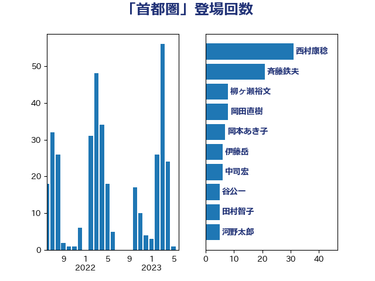

単語「首都圏」

| 西村康稔 | 自由民主党 | 31 回 |
| 斉藤鉄夫 | 公明党 | 21 回 |
| 柳ヶ瀬裕文 | 日本維新の会 | 8 回 |
| 岡田直樹 | 自由民主党 | 8 回 |
| 岡本あき子 | 立憲民主党 | 7 回 |
| 伊藤岳 | 日本共産党 | 6 回 |
| 中司宏 | 日本維新の会 | 6 回 |
| 谷公一 | 自由民主党 | 5 回 |
| 田村智子 | 日本共産党 | 5 回 |
| 河野太郎 | 自由民主党 | 5 回 |
| 杉尾秀哉 | 立憲民主党 | 5 回 |
| 小泉進次郎 | 自由民主党 | 5 回 |
| 奥野総一郎 | 立憲民主党 | 5 回 |
| 中野英幸 | 自由民主党 | 5 回 |
| 鈴木敦 | 国民民主党 | 4 回 |
| 赤羽一嘉 | 公明党 | 4 回 |
| 西岡秀子 | 国民民主党 | 4 回 |
| 田村憲久 | 自由民主党 | 4 回 |
| 浅田均 | 日本維新の会 | 4 回 |
| 中根一幸 | 自由民主党 | 4 回 |
| 高橋光男 | 公明党 | 3 回 |
| 萩生田光一 | 自由民主党 | 3 回 |
| 福島伸享 | 無所属 | 3 回 |
| 福島みずほ | 社会民主党 | 3 回 |
| 東徹 | 日本維新の会 | 3 回 |
| 小熊慎司 | 立憲民主党 | 3 回 |
| 高橋千鶴子 | 日本共産党 | 2 回 |
| 長妻昭 | 立憲民主党 | 2 回 |
| 鈴木庸介 | 立憲民主党 | 2 回 |
| 谷田川元 | 立憲民主党 | 2 回 |
| 竹内真二 | 公明党 | 2 回 |
| 福田昭夫 | 立憲民主党 | 2 回 |
| 石井章 | 日本維新の会 | 2 回 |
| 牧野たかお | 自由民主党 | 2 回 |
| 牧山ひろえ | 立憲民主党 | 2 回 |
| 沢田良 | 日本維新の会 | 2 回 |
| 森屋宏 | 自由民主党 | 2 回 |
| 枝野幸男 | 立憲民主党 | 2 回 |
| 末松義規 | 立憲民主党 | 2 回 |
| 木村英子 | れいわ新選組 | 2 回 |
| 斎藤アレックス | 国民民主党 | 2 回 |
| 岸真紀子 | 立憲民主党 | 2 回 |
| 岸田文雄 | 自由民主党 | 2 回 |
| 山田宏 | 自由民主党 | 2 回 |
| 山崎誠 | 立憲民主党 | 2 回 |
| 山下雄平 | 自由民主党 | 2 回 |
| 山下芳生 | 日本共産党 | 2 回 |
| 小里泰弘 | 自由民主党 | 2 回 |
| 小林一大 | 自由民主党 | 2 回 |
| 室井邦彦 | 日本維新の会 | 2 回 |
| 大西英男 | 自由民主党 | 2 回 |
| 塩川鉄也 | 日本共産党 | 2 回 |
| 塩崎彰久 | 自由民主党 | 2 回 |
| 堤かなめ | 立憲民主党 | 2 回 |
| 倉林明子 | 日本共産党 | 2 回 |
| 佐々木さやか | 公明党 | 2 回 |
| 伊佐進一 | 公明党 | 2 回 |
| 中西祐介 | 自由民主党 | 2 回 |
| 上田清司 | 国民民主党 | 2 回 |
| 一谷勇一郎 | 日本維新の会 | 2 回 |
| たがや亮 | れいわ新選組 | 2 回 |
| 高良鉄美 | 無所属 | 1 回 |
| 高橋英明 | 日本維新の会 | 1 回 |
| 高木真理 | 立憲民主党 | 1 回 |
| 馬淵澄夫 | 立憲民主党 | 1 回 |
| 須藤元気 | 無所属 | 1 回 |
| 青木愛 | 立憲民主党 | 1 回 |
| 長友慎治 | 国民民主党 | 1 回 |
| 金子恵美 | 立憲民主党 | 1 回 |
| 野田佳彦 | 立憲民主党 | 1 回 |
| 遠藤良太 | 日本維新の会 | 1 回 |
| 輿水恵一 | 公明党 | 1 回 |
| 足立敏之 | 自由民主党 | 1 回 |
| 赤池誠章 | 自由民主党 | 1 回 |
| 西銘恒三郎 | 自由民主党 | 1 回 |
| 西田昌司 | 自由民主党 | 1 回 |
| 西田実仁 | 公明党 | 1 回 |
| 藤巻健太 | 日本維新の会 | 1 回 |
| 茂木敏充 | 自由民主党 | 1 回 |
| 若宮健嗣 | 自由民主党 | 1 回 |
| 芳賀道也 | 国民民主党 | 1 回 |
| 自見はなこ | 自由民主党 | 1 回 |
| 緑川貴士 | 立憲民主党 | 1 回 |
| 竹谷とし子 | 公明党 | 1 回 |
| 稲富修二 | 立憲民主党 | 1 回 |
| 石川香織 | 立憲民主党 | 1 回 |
| 田中健 | 国民民主党 | 1 回 |
| 片山さつき | 自由民主党 | 1 回 |
| 渡辺猛之 | 自由民主党 | 1 回 |
| 清水真人 | 自由民主党 | 1 回 |
| 池畑浩太朗 | 日本維新の会 | 1 回 |
| 江藤拓 | 自由民主党 | 1 回 |
| 櫻田義孝 | 自由民主党 | 1 回 |
| 森山浩行 | 立憲民主党 | 1 回 |
| 柴田巧 | 日本維新の会 | 1 回 |
| 柚木道義 | 立憲民主党 | 1 回 |
| 柘植芳文 | 自由民主党 | 1 回 |
| 松野博一 | 自由民主党 | 1 回 |
| 松山政司 | 自由民主党 | 1 回 |
| 朝日健太郎 | 自由民主党 | 1 回 |
| 斎藤嘉隆 | 立憲民主党 | 1 回 |
| 徳永久志 | 立憲民主党 | 1 回 |
| 徳永エリ | 立憲民主党 | 1 回 |
| 広瀬めぐみ | 自由民主党 | 1 回 |
| 山谷えり子 | 自由民主党 | 1 回 |
| 山口那津男 | 公明党 | 1 回 |
| 小野泰輔 | 日本維新の会 | 1 回 |
| 小沢雅仁 | 立憲民主党 | 1 回 |
| 小森卓郎 | 自由民主党 | 1 回 |
| 小宮山泰子 | 立憲民主党 | 1 回 |
| 大西健介 | 立憲民主党 | 1 回 |
| 吉田はるみ | 立憲民主党 | 1 回 |
| 北神圭朗 | 無所属 | 1 回 |
| 勝部賢志 | 立憲民主党 | 1 回 |
| 加藤鮎子 | 自由民主党 | 1 回 |
| 佐藤英道 | 公明党 | 1 回 |
| 伊波洋一 | 無所属 | 1 回 |
| 中川康洋 | 公明党 | 1 回 |
| 下村博文 | 自由民主党 | 1 回 |
| 上田英俊 | 自由民主党 | 1 回 |
| 上杉謙太郎 | 自由民主党 | 1 回 |
| 上月良祐 | 自由民主党 | 1 回 |